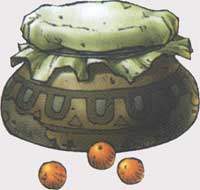
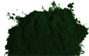
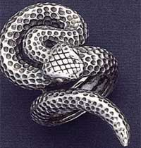
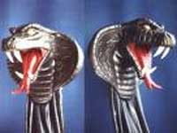
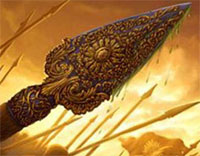
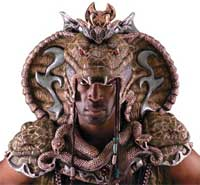
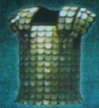
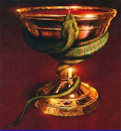
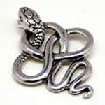

I chierici del Serpente possono consacrare determinati oggetti al fine di conferire loro un incantamento sacro minore.
| OGGETTO | Pergamena del Serpente |
| ORIGINE | DIVINA - Divinità Serpente - Forze Oscure |
| POTENZA | Least Minor Enchantment (75 xp, 150 gp) |
| SCUOLA DI MAGIA | ENCHANTMENT |
|
DESCRIZIONE
|
Può
essere incantata con questo incantamento minore ogni pergamena non magica.
Attraverso l'utilizzo di questo incantamento
la pergamena diventerà
capace di contenere unicamente incantesimi clericali della divinità del
sacerdote che ha incantato l'oggetto, divenendo il supporto
necessario per la creazione delle pergamene magiche clericali.
Oltre ai comuni modificatori applicabili a tutti gli incantamenti
minori, chi possiede la competenza Papermaking e la utilizza
nella produzione di questo minor enchantment riceve i seguenti
modificatori nella produzione di questo oggetto: |
| OGGETTO | Powder of Emotionless |
| ORIGINE | DIVINA - Divinità Serpente - Forze Oscure |
| POTENZA | Least Minor Enchantment (75 xp, 200 gp) |
| SCUOLA DI MAGIA | CHARM |
|
DESCRIZIONE
 |
Con l'incantamento minore of Emotionless i chierici del Serpente possono incantare delle polveri di piante utilizzate per la creazione di droghe dal valore di 10 monete d'oro e dal peso di 0,5 libbre. All'esito del procedimento di incantamento il chierico avrà creato un recipiente di polvere magica che può essere utilizzata da qualsiasi creatura avente taglia massima medium. La polvere dovrà essere utilizzata con un'azione complessa dalla durata di un intero round. A partire dal round successivo, per un ammontare pari a 10 round, la mente di chi ha utilizzato la polvere sarà tranquillizzata e resa insensibile ai cambiamenti di umore e di emozioni. Per tale motivo costui riceverà un bonus di +10% a tutti i tiri salvezza su mente effettuati nel corso della durata dell'incantamento. Nel medesimo periodo la polvere impedirà l'attivazione, sia volontaria che involontaria, del talento Furia di Combattimento proprio della classe talentuosa dei Combattenti Berserker. La polvere si consuma una volta utilizzata. |
| OGGETTO | Dust of Snake |
| ORIGINE | DIVINA - Divinità Serpente - Forze Oscure |
| POTENZA | Least Minor Enchantment (75 xp, 250 gp) |
| SCUOLA DI MAGIA | CONJURATION/SUMMONING |
|
DESCRIZIONE
 |
Questa polvere magica (link) di colore verde scuro è in grado di far apparire un serpente di polvere in grado di stritolare l'avversario scelto al momento dell'utilizzo. Per la sua particolare modalità di utilizzo, infatti, questa polvere può essere usata solo con la modalità di spargimento concentrato selezionando al momento dell'uso la vittima della stessa. La vittima ha diritto a superare un tiro salvezza su magia per evitare gli effetti della polvere. Qualora la polvere non sia utilizzata da un fedele del Serpente la vittima ottiene un bonus di +5% a tale tiro salvezza; se, invece, la polvere è utilizzata da un Ministro del Culto del Serpente la vittima ottiene una penalità di -5% al tiro salvezza. Il serpente di polvere, inoltre, può bloccare creature di dimensione Small e Medium, mentre le Large ottengono un bonus di +5% al tiro salvezza, creature più piccole o più grandi non saranno affette dalla magia. Se il tiro salvezza fallisce un serpente di polvere appare intorno alla vittima stritolandola. Il serpente di polvere ostacola la maggior parte dei movimenti della vittima che si considererà incapacitata per tutta la durata degli effetti dell'incantamento che è pari ad cinque round (ivi compreso il round nel quale la polvere è stata utilizzata). Il serpente non ha consistenza per tutte le altre creature e quindi non blocca attacchi e magie diretti contro la vittima. |
| OGGETTO | Ring of the Serpent Sect |
| ORIGINE | DIVINA - Divinità Serpente - Forze Oscure |
| POTENZA | Lesser Minor Enchantment (100 xp, 750 gp) |
| SCUOLA DI MAGIA | CHARM |
|
DESCRIZIONE
 |
Con
l'incantamento minore
of Serpent Sect
può essere incantato unicamente un
anello
d'argento avente la forma di un serpente dal valore di minimo 25 monete
d'oro e dal peso pari ad 1/10 di libbra. Questo oggetto magico
rappresenta l'aspetto settario del Culto del Serpente. Indossare questo
simbolo serve, infatti, a mostrare l'appartenenza alla setta religiosa
(l'anello quindi può essere indossato validamente solo dai fedeli del
Serpente). Per tale motivo chi indossa questo oggetto magico riceve un
bonus di +1 a tutte le prove nella competenza
Good Willing Faith
[Generale] eventualmente posseduta. Costui ottiene anche un bonus di +1
alle prove nelle seguenti competenze esclusivamente quando le utilizza
nei confronti di chi è fedele del Serpente:
Teaching
[Generale],
Astrology
[Sacerdoti - Utenti di Magia],
Diagnostic
[Sacerdoti - Utenti di Magia],
Healing
[Sacerdoti],
Battle Mastery
[Combattenti],
Fortune Telling
[Vagabondi],
Ritual Tattoos
[Vagabondi],
Hypnotism
[Utenti di Magia] ed
Omen Reading
[Sacerdoti - Utenti di Magia]. |
| OGGETTO | Staff of Lesser Serpent Conjuration |
| ORIGINE | DIVINA - Divinità Serpente - Forze Oscure |
| POTENZA | Minor Enchantment (150 xp, 1250 gp) |
| SCUOLA DI MAGIA | SUMMONING |
| CARICHE | 10 |
|
DESCRIZIONE

|
Con l'incantamento minore of Lesser Serpent Conjuration può essere incantato unicamente un particolare bastone da passeggio di legno nero e con la parte superiore in metallo prezioso (comunemente argento) raffigurante una testa di serpente. Tale bastone ha un costo minimo pari a 100 g.p., un peso pari a 3 lb., misura dimensioni medium ed effettua tiri salvezza su base legno. Un bastone così incantato potrà essere utilizzato unicamente dai fedeli del serpente appartenenti ad classe di utenti di magia o di sacerdoti al fine di convocare alla loro presenza un serpente. Utilizzando una carica del bastone costoro potranno, quindi, lanciare la magia Summon Snake (Scuola Summoning, 2° livello di potere, link) al 1° livello di lancio. Si noti che trattandosi a tutti gli effetti di una magia di convocazione spazio/temporale il mago o il chierico che la utilizza dovrà rispettare le regole per il controllo delle creature convocate. In ogni caso non sarà possibile utilizzare nuovamente il bastone prima della fine della convocazione precedentemente utilizzata attraverso lo stesso. Per ricaricare il bastone è necessario che un chierico avente il livello minimo necessario a produrlo effettui un particolare rituale presso un Tempio del Serpente dalla durata di 5 interi giorni ininterrotti di lavoro utilizzando incensi ed altri componenti magici pari a 15 monete d'oro per ogni carica che si vuole recuperare (se il chierico interrompe il proprio lavoro dovrà ripetere interamente il procedimento ed utilizzare nuovi componenti magici). Tale procedimento di ricarica è sicuro ed a differenza dei comuni oggetti magici a cariche questo bastone può esaurire tutte le sue cariche senza perdere permanentemente il suo potere magico. |
| OGGETTO | Lesser Poisonous Weapon |
| ORIGINE | DIVINA - Divinità Serpente - Forze Oscure |
| POTENZA | Superior Minor Enchantment (250 xp, 1750 gp) |
| SCUOLA DI MAGIA | CONJURATION |
|
DESCRIZIONE
 |
Con
l'incantamento minore
Lesser Poisonous
possono essere incantate solo le armi da corpo a corpo da taglio o da
punta.
Un fedele del Serpente che impugna quest'arma può decidere,
una volta per ogni flusso di energia divina del Serpente, di invocare il potere della divinità per far
ricoprire la lama di pericoloso veleno. Per attivare il potere basta invocare
mentalmente la
propria divinità e non è richiesto l'utilizzo di un'intera azione bensì solo
di una frazione del round, si considera una
free action
che impone unicamente una penalità di +3 (+2 se si utilizza un'arma
rituale del Culto del Serpente) alla propria iniziativa e e
che richiede componenti verbali (preghiera
al Serpente) e somatici ma non il mantenimento della concentrazione.
L'arma sarà, quindi, coperta di veleno per un ammontare di round
(comprensivo di quello di attivazione) che varia a seconda del colore
della veste di chi lo ha attivato secondo questo schema:
Veste Nera 3 round,
Veste Azzurra
4 round, Veste Rossa
o Ministro del Culto (chierici e paladini) 5 round. |
| OGGETTO | Mask of the Spitting Snake |
| ORIGINE | DIVINA - Divinità Serpente - Forze Oscure |
| POTENZA | Superior Minor Enchantment (250 xp, 2000 gp) |
| SCUOLA DI MAGIA | CONJURATION |
|
DESCRIZIONE
 |
Con
l'incantamento minore
of the Spitting Snake
possono essere incantate solo le Maschere del Serpente (costo 150 monete
d'oro, peso 2 lbs.), ossia quelle maschere rituali che i chierici del
Serpente sono tenuti ad indossare nel corso dei rituali sacri. Quando
tali copricapo rituali sono incantati con questo incantamento minore, lo
stesso conferisce loro una resistenza tale da permetterne l'utilizzo
quali elmi protettivi in combattimento.
Quest'elmo, utilizzabile solo da creature
umanoidi di taglia
medium,
si considera avere le seguenti statistiche:
|
| OGGETTO | Scale Mail of Lesser Regeneration |
| ORIGINE | DIVINA - Divinità Serpente - Forze Oscure |
| POTENZA | Greater Minor Enchantment (375 xp, 3000 gp) |
| SCUOLA DI MAGIA | NECROMANCY |
|
DESCRIZIONE
 |
Con
l'incantamento minore
of Lesser Regeneration
possono essere incantate solo le corazze del tipo Scale Mail o corazze a
queste equivalenti (si pensi alle corazze creature con le scaglie delle
creature mostruose).
Un fedele del Serpente che indossa questa corazza può decidere,
una volta per ogni
flusso di energia divina del Serpente, di invocare il potere della divinità
attivarla. Attivare il potere è un'azione complessa dalla durata
dell'intero round che richiede componente verbali (preghiera al
Serpente) e somatici ma non il mantenimento della concentrazione. |
| OGGETTO | Superior Poisonous Weapon |
| ORIGINE | DIVINA - Divinità Serpente - Forze Oscure |
| POTENZA | Greater Minor Enchantment (375 xp, 3500 gp) |
| SCUOLA DI MAGIA | CONJURATION |
|
DESCRIZIONE
|
Con
l'incantamento minore
Superior
Poisonous
possono essere incantate solo le armi da corpo a corpo da taglio o da
punta.
Un fedele del Serpente che impugna quest'arma può decidere,
una volta per ogni
flusso di energia divina del Serpente, di invocare il potere della divinità per far
ricoprire la lama di pericoloso veleno. Per attivare il potere basta invocare
mentalmente la
propria divinità e non è richiesto l'utilizzo di un'intera azione bensì solo
di una frazione del round, si considera una
free action
che impone unicamente una penalità di +3 (+2 se si utilizza un'arma
rituale del Culto del Serpente) alla propria iniziativa e
che richiede componenti verbali (preghiera al Serpente) e somatici ma
non il mantenimento della concentrazione.
L'arma sarà,
quindi, coperta di veleno per un ammontare di round (comprensivo di
quello di attivazione) che varia a seconda del colore della veste di chi
lo ha attivato secondo questo schema:
Veste Nera 3 round,
Veste Azzurra
4 round, Veste Rossa
o Ministro del Culto (chierici e paladini) 5 round. |
| OGGETTO | Cup of Serpent Blood |
| ORIGINE | DIVINA - Divinità Serpente - Forze Oscure |
| POTENZA | Greater Minor Enchantment (375 xp, 4000 gp) |
| SCUOLA DI MAGIA | CONJURATION |
|
DESCRIZIONE
 |
Con l'incantamento minore Serpent Blood può essere incantato unicamente una Coppa del Veleno, ossia quel particolare calice rituale d'oro con scolpito in rilievo un serpente attorcigliato intorno allo stesso il cui interno è rivestito da viscere trattate di serpenti velenosi utilizzato comunemente per la creazione dell'acqua santa. Tale calice ha un costo minimo pari a 200 g.p., un peso pari ad 2 lb. ed effettua tiri salvezza su base metalli dolci. Un calice così incantato potrà essere utilizzato unicamente dai fedeli del Serpente per porre in essere un vero e proprio piccolo rituale sacro. Il calice può essere utilizzato solo nel round immediatamente successivo alla morte di una creatura assieme al pugnale rituale Kulish. Il fedele, infatti, con un'azione complessa che richiede componenti vocali (invocazione divina del Serpente) e somatici (ma non il mantenimento della concentrazione) provocherà una ferita con il Kulish nel corpo della creatura appena morta riempiendo il calice con il suo sangue. Il round successivo, quindi, con un'altra azione complessa che richiede componenti vocali (invocazione divina del Serpente) e somatici (ma non il mantenimento della concentrazione) il medesimo fedele attiverà l'incantamento del calice e ne berrà il contenuto. L'effetto dell'incantamento, quindi, sarà quello di far rigenerare le ferite di chi ha effettuato il rituale ad un ritmo che varia a seconda del colore della sua veste secondo questo schema: Veste Nera 1 punto ferita/round, Veste Azzurra 2 punti ferita/round, Veste Rossa o Ministro del Culto (chierici e paladini) 3 punti ferita/round. La rigenerazione avverrà alla fine di ogni round a partire da quello di attivazione e perdurerà per un ammontare di round pari alla metà (calcolata per eccesso) dei livelli/dadi vita della creatura oggetto del rituale. Creature aventi intelligenza almeno pari ad Average intelligence (8-10) saranno considerate aventi un livello/dado vita supplementare. Si noti che il rituale può essere effettuato solo sul corpo di creature aventi un corpo animale di tipo organico originari del Primo Piano Materiale (non funzionando ad esempio su non morti, costruiti, elementali, esseri vegetali, melmoidi, esseri extraplanari, ecc...). Una volta attivato il calice non potrà essere attivato nuovamente fino al successivo momento di flusso di energia divina del Serpente, inoltre il fedele che ha usufruito dei suoi effetti non otterrà alcun beneficio fino al raggiungimento del successivo momento di flusso di energia divina della divinità nonostante effettui il rituale utilizzando un altro diverso calice (che, però, non si considererà attivato). |
| OGGETTO | Amulet of Serpent Protection |
| ORIGINE | DIVINA - Divinità Serpente - Forze Oscure |
| POTENZA | Greater Minor Enchantment (375 xp, 4500 g.p.) |
|
DESCRIZIONE  |
Questo amuleto magico (cfr. le regole generali per gli amuleti magici al seguente link) a forma di serpente è in grado di proteggere chi lo indossa dal contatto con le creature serpentiformi. Si intenderà per creatura serpentiforme qualsiasi serpente (sia comune che in versione gigante) nonché qualsiasi creatura la cui struttura fisica ricordi (anche parzialmente) il corpo di un serpente (si pensi a creature quali gli Snakeman, le Naga (anche se demoniache), le Serpentidi e così via...). Orbene le suddette creature avvertiranno una sensazione di repulsione nei confronti di chi indossa questo amuleto. Qualora costoro, quindi, desiderino attaccare in corpo a corpo, con attacchi fisici o con anche l'uso delle armi, la creatura che indossa l'amuleto dovranno superare un tiro salvezza su magia. Se l'amuleto è indossato da un fedele del Culto del Serpente a tale tiro salvezza sarà applicata una penalità di -5%. L'amuleto non difende i fedeli di qualsiasi divinità appartenente alla Fratellanza della Luce. Il tiro salvezza va eseguito una sola volta al primo tentativo di attacco effettuato nel round. Se il tiro salvezza fallisce la creatura non potrà effettuare l'attacco e perderà la relativa azione, inoltre la creatura non potrà effettuare alcun ulteriore attacco nei confronti della creatura protetta nel medesimo round di combattimento. Il tiro salvezza va ripetuto ad ogni successivo round. Non appena, però, la creatura supera il tiro salvezza costei sarà libera di attaccare la creatura protetta per tutto il resto del medesimo combattimento (la protezione si riattiverà nei confronti di quella creatura solo in un eventuale successivo e diverso combattimento). Deve osservarsi che le creature aventi un ammontare di dadi vita/livelli pari a 4 o 5 riceveranno un bonus di +5% al tiro salvezza, le creature aventi un ammontare di dadi vita/livelli pari a 6 o 7 riceveranno un bonus di +10% al tiro salvezza, le creature aventi un ammontare di dadi vita/livelli pari a 8 o 9 riceveranno un bonus di +15% al tiro salvezza, le creature aventi un ammontare di dadi vita/livelli pari a 10 od 11 riceveranno un bonus di +20% al tiro salvezza e le creature aventi un ammontare di dadi vita/livelli pari o superiore a 12 riceveranno un bonus di +25% al tiro salvezza. Si noti che la protezione è applicata solo agli attacchi in corpo a corpo non essendo limitati in alcun modo gli attacchi a distanza e l'utilizzo di poteri speciali ed incantesimi che non richiedano di toccare la creatura protetta. |